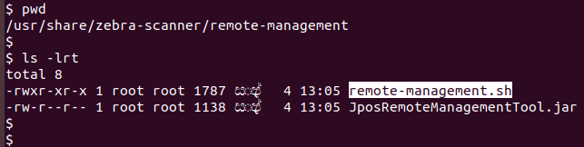
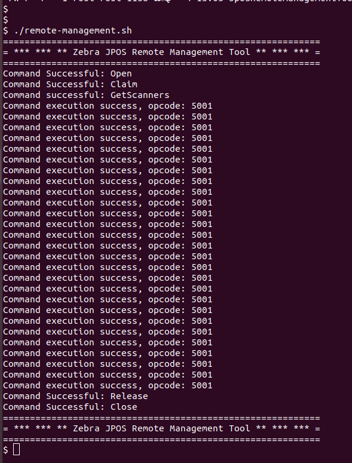

Overview
Zebra JPOS Remote Management Tool is an application which can deliver information related to current operation such as operative status, health and statistics of Zebra barcode scanners. Zebra JPOS Remote Management Tool is bundled with Zebra Barcode Scanner SDK for Linux that supports many Linux distributions such as Ubuntu 16.04, SUSE12, Debian 9 and operates with Zebra's Native and JAVAPOS libraries.
Following are some of the basic information that can be obtained using the tool:
- Scanner model
- Serial number
- Duration of operation from the last "Power-ON"
- Good decode count related to barcode scanning
- Scale calibration event count
- "Zero Scale" button pushed count
- Display error count
Many other scanner information can be retrieved on a plain text log file by configuring the tool through its XML configuration file.
Installation and Configuration
JPOS Remote Management Tool uses the Zebra Native and JAVAPOS libraries that are installed along with CoreScanner and JPOS drivers for Zebra scanners.
Quick Setup Guide
"remote-management.xml" config file which is located in /usr/share/zebra-scanner/javapos/xml is used to configure Zebra Remote Management Tool to retrieve required scanner information in a log file.
"remote-management.xml" configuration file has following format:
<remote-management-configuration>
<user-log>
<file-path> path-of-log-file </file-path>
<file-hostname>name-of-log-file</file-host-name>
<file-serial-number>scanner-serial-number</file-serial-number>
<file-model-number>scanner-model-number</file-model-number>
</user-log>
<scanner-configuration>
<logical-name>scanner-management-interface</logical-name>
<query-scanner-attributes>
<attribute>
<id> attribute-id-1 </id>
<name> attribute-name-1 </name>
<attribute>
<attribute>
<id> attribute-id-2 </id>
<name> attribute-name-2 </name>
<attribute>
<query-scanner-attributes>
<scanner-configuration>
</remote-management-configuration>
NOTE: Each attribute has an ID (unique number) given by Zebra. A list of IDs of the most commonly used attributes is given at the end of this section.
If any information that is not included in the list is needed, Zebra can evaluate the possibility of providing it based on scanner capability.
Sample remote-management.xml is given below.
Most Commonly Used Attributes
Table Most Commonly Used Attributes
| Attribute ID | Description | Type |
|---|---|---|
| 533 | Scanner model | Inventory |
| 534 | Serial number | Inventory |
| 20004 | Firmware version | Inventory |
| 15 | PDF symbology activated | Configuration |
| 15013 | Seconds from Power-On | Performance |
| 293 | QR symbology activated | Configuration |
| 15421 | Number of UPC read | Performance |
| 25007 | Scale calibration count | Performance |
| 15251 | Pole display fault count | Diagnostic |
| 15227 | Zero-scale button count | Diagnostic |
How to run JPOS Remote Management Tool
- Log into your Linux system and open a terminal/console.
-
Change directory to /user/share/zebra-scanner/remote-management.
 -
Execute remote-management.sh script.

Statistics Log File
After the successful execution of the script, a plain text file with the expected statistics data is generated. The file will have the .log extension and will be in the path that has been configured in the configuration XML. By default, the log file will be generated in /var/log/zebra-scanner/jpos-remote-management directory.
Information in the log file are delimited by "pipe" ( | ) separator, each field contains information about a single attribute specified via the configuration XML file. String “null” will be printed if a specified attribute is not supported by the scanner. Sample entry from the log file is as below. A separate log file will be created for each scanner.